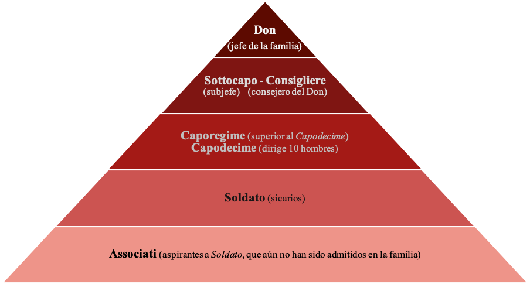

La Mafia en Italia
En Italia hay cuatro mafias principales: la Cosa Nostra (Sicilia), la Camorra (Campania), la 'Ndrangheta (Calabria) y la Sacra Corona Unita (Apulia).
Estructura de la Mafia en Italia
Cosa Nostra
Durante el fascismo en Italia, Cesare Mori, prefecto de Palermo, usó los poderes especiales que le fueron otorgados para procesar a la mafia, forzando a muchos mafiosos a huir al extranjero o arriesgarse a ser encarcelados. Muchos huyeron a los Estados Unidos, entre ellos Giuseppe "Joseph" Bonanno, alias Joe Bananas, que llegaría a dominar la rama estadounidense de la mafia.
La principal división entre la mafia siciliana, hoy en día, es entre aquellos jefes que han sido condenados o están en la cárcel, principalmente Salvatore 'Toto' Riina y Antonio Biffa 'Tony', el capo di tutti capi desde 1993 hasta 1995, y aquellos como Bernardo Provenzano, capturado en 2006, aunque no ha sido aún procesado ni condenado. Además de Fabrizzio Molinari "Fab" y Benito Lorenzetti "Pad". Aunque los mismos siguen clandestinos, al igual que Laureano Spollanzoni, un secuaz, conocido como "El Tesorero". Los jefes encarcelados están sujetos a un fuerte control en sus contactos con el mundo exterior, limitando su capacidad para dirigir operaciones desde la cárcel, bajo la ley italiana 41 bis. En agosto de 2010 llegó la información de que "Padrino", mejor conocido como "Pad" y Fabrizzio, cortaron los lazos de negocios, aunque siguen ambos clandestinos.
Antonio Giuffrè, un confidente cercano a Provenzano, sostiene que, en 1993, Cosa Nostra tenía contacto directo con representantes de Silvio Berlusconi mientras creaba su nuevo partido Forza Italia, llegando a revocar la 41 bis en el Parlamento; pero nada sugiere una conexión directa entre Berlusconi y Cosa Nostra. Incluso si se demuestra que las alegaciones no tienen ningún fundamento, los miembros de Cosa Nostra se sienten decepcionados por un gobierno que piensan que, correcta o incorrectamente, tiene elementos a favor de ellos.
Camorra
La Camorra, equivalente a la mafia siciliana, nace en Nápoles (Campania) alrededor del siglo XIV. La etimología del término «Camorra» es bastante incierta y se presta a bastantes interpretaciones, pero la más aceptada es la tesis de que «camorra» viene del término dialectal napolitano c'a morra (literalmente ‘con el grupo’, en referencia a los grupos callejeros que practicaban el popular juego de la morra, en Nápoles), nombre con el que se individualizaba también a bandas de malhechores que controlaban los juegos de azar y la prostitución en el Reino de Nápoles, desde el 1300 hasta el 1800. Contrariamente a la mafia, la Camorra ha estado (salvo casos esporádicos) alejada de la política y las fuerzas armadas; solo con Fernando IV y Francisco II tuvo una tímida tentativa de colaborar, pero a la larga no reportó beneficios para ninguna de las dos partes.
Sus miembros, llamados camorristi, se relacionaron con actividades de contrabando, chantaje, soborno, robo y asesinato. Saquearon y aterrorizaron al país durante muchos años. Después de siglos de evolución, saltaron a la luz pública hacia 1830. La Camorra prosperó durante los desórdenes que se produjeron en Italia en la lucha por la unificación. La organización se alió con las fuerzas del nacionalista italiano Giuseppe Garibaldi y contribuyó a expulsar a la casa reinante, los Borbones, del país. En el periodo que siguió a la unificación de Italia (1870), se llevó a cabo un breve e infructuoso intento de emplear a los camorristi en el cuerpo de policía. La Camorra continuó sembrando el temor por la nación y prácticamente gobernaban la ciudad de Nápoles a comienzos del siglo XX. Su poder se debilitó enormemente cuando sus miembros fueron acusados de asesinato y llevados a juicio en 1911. Esta asociación fue eliminada en 1922 por el gobierno fascista de Benito Mussolini. No obstante, bandas criminales similares a la Camorra siguieron operando en Nápoles, aunque desde 1984, las confesiones de algunos jefes camorristas «arrepentidos» han llevado a la desarticulación de parte de la infraestructura que habían vuelto a desarrollar desde los años 60.
Al Capone era la extensión de la Camorra en los EE. UU. Sin embargo, su única relación con la mafia era su condición de italo-estadounidense, ya que la Camorra no opera como una organización piramidal y respetuosa a las jerarquías dentro de las familias, sino que son solo grupos que se manejan separadamente, luchando constantemente entre sí y sin ninguna organización central, como la que caracteriza a la Cosa Nostra.
Actualmente, la Camorra napolitana es una organización mafiosa de las más poderosas, ya que controla gran parte del tráfico de drogas del sur de la península itálica. Está involucrada en más de 4000 muertes, mayoritariamente ajustes de cuentas entre bandas y familias implicadas. La red de la Camorra napolitana no solo se limita a Italia, sino que tiene ramificaciones en Francia con la mafia marsellesa y en Estados Unidos.

La 'Ndrangheta
Con la palabra 'ndrangheta (o Famiglia Montalbano, Onorata società y Picciotteria) se indica la mafia de Calabria (región situada en el extremo sur de Italia). Hoy la 'ndrangheta es una entre las más fuertes y peligrosas organizaciones criminales en Italia con una difusión también al extranjero (desde Canadá a algunos países europeos). El origen de la palabra "'ndrangheta" procede del griego antiguo "andragathos", que significa ‘hombre valiente’.
Sacra Corona Unita
Sacra Corona Unita es una organización criminal mafiosa de la región de Apulia (en italiano, Puglia) en el sur de Italia, y especialmente activa en su capital Bari. Es relativamente reciente: nació en 1983. La Sacra Corona Unita tiene conexiones con la Ndrangheta, Camorra y Cosa Nostra. Opera con la venta de drogas, prostitución, extorsión y lavado de dinero.